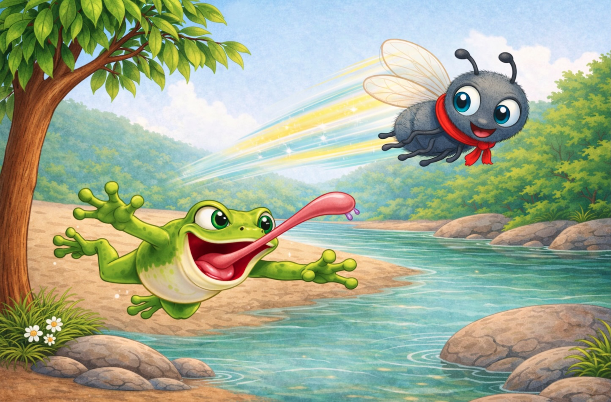

A Fly and a Frog
A playful tale of quick thinking, danger, and a very clever escape →

More Stories Coming
New tales are on their way — stay tuned for more storytime moments.
Oma Robbie Storytime Series
Playful stories created with warmth, imagination, and a touch of wonder — written to be shared, remembered, and loved.